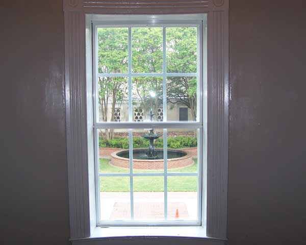
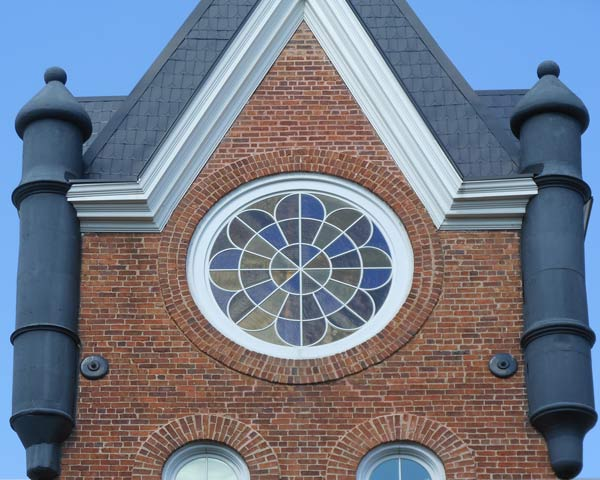

Thermal Upgrading
Interior Secondary Glazing
Historic windows can be enhanced for energy efficiency without sacrificing appearance. Shenandoah Restorations, Inc. uses the highest quality products to ensure historical stature while conserving energy by the highest standards. After a consultation, we can advise on and install the best solution for your unique project.

Interior secondary glazing

Insulated glass in steel windows